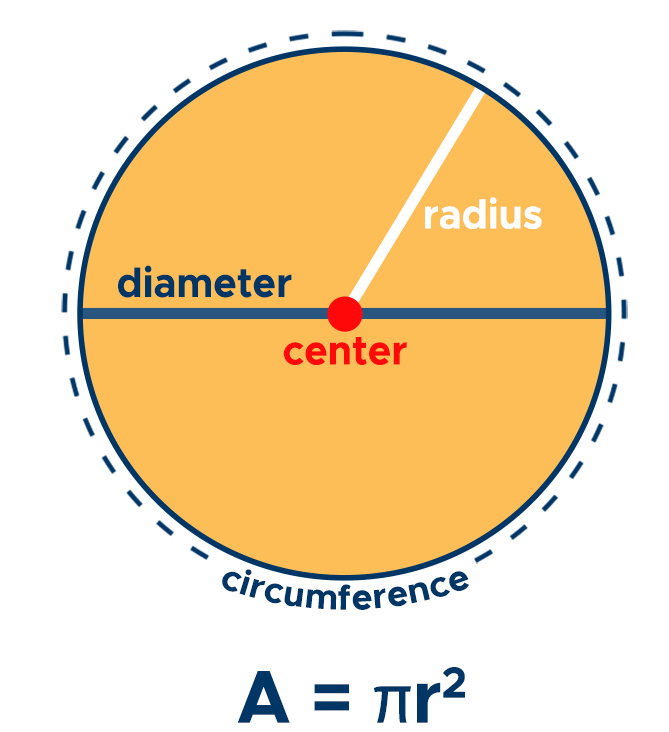
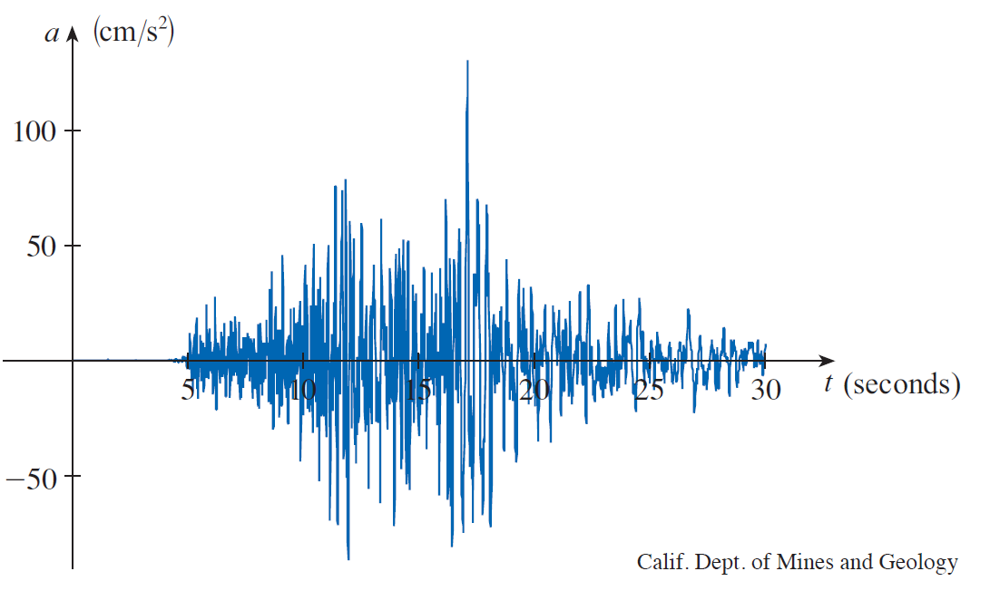
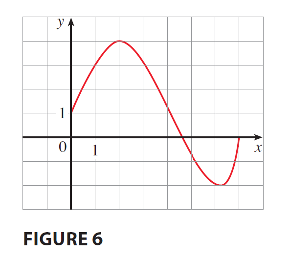
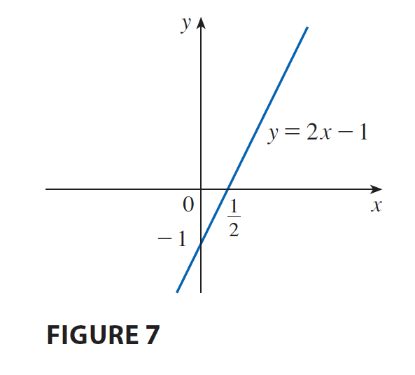

Topic 1. អនុគមន៍ និង ម៉ូដែលគណិតវិទ្យា
Functions and Models
បង្រៀនដោយ
ហាំ ការីម
វត្ថុបំណង - Objectives:
-
ពិភាក្សាអំពីគំនិតគន្លឹះទាក់ទងនឹងអនុគមន៍ - ក្រាហ្វរបស់អនុគមន៍ និងរបៀបបំប្លែង និងបន្សំអនុគមន៍ចូលគ្នា ។
To discuss the basic ideas concerning functions, their graphs, and ways of transforming and combining them.
- តាងអនុគមន៍តាមវិធីផ្សេងៗ ដូចជា៖ តាមរយៈសមីការ - តារាង - ក្រាហ្វិក ឬជាពាក្យ ។
To represent a function in different ways: by an equation, in a table, by a graph, or in words.
- ស្វែងយល់អនុគមន៍សំខាន់ៗ ដែលមានក្នុងមុខវិជ្ជាគណិតគណនា និងពិពណ៌នាអំពីរបៀបប្រើប្រាស់អនុគមន៍ទាំងនេះ ជាគំរូគណិតវិទ្យាតាងឱ្យបាតុភូតកើតមានក្នុងពិភពពិត ។
To look at the main types of functions that occur in calculus and describe the process of using these functions as mathematical models of realworld phenomena.
Four Ways to Represent a Function
ពិនិត្យឧទាហរណ៍ខាងក្រោម៖
-
ផ្ទៃក្រឡាថាស (រង្វង់) តាងដោយ \( A \) ជាអនុគមន៍ទៅនឹងកាំ \( r \) តាងដោយសមីការ \( A = \pi r^2 \) ។ ការតាងបែបនេះ បង្ហាញយ៉ាងច្បាស់ពី output (ធាតុចេញ) គឺ ផ្ទៃ អាស្រ័យទៅនឹង input (ធាតុចូល) គឺ កាំ ។

-
ចំនួនប្រជាជនពិភពលោក តាងដោយ \( P \) ជាអនុគមន៍ទៅនឹងពេលវេលា \( t \) អាចអោយគេចុះជាតារាងមួយដូចខាងក្រោម។ គេអាចប៉ាន់ស្មានចំនួនប្រជាជនបានជាក់លាក់ ក្នុងឆ្នាំណាមួយ ជាទាហរណ៍ \( P \approx 2,560,000,000 \) នៅក្នុងឆ្នាំ \( t = 1950 \) ។ ទម្រង់ជាតារាងនេះ អាចឱ្យគេងាយស្រួលនិយាយយោងលើតម្លៃនៅត្រង់ចំណុចជាក់លាក់ណាមួយនៃពេលវេលា ។
\[
\begin{array}{|c|c|c|c|c|c|c|c|c|c|c|c|c|}
\hline
\text{Year} & 1900 & 1910 & 1920 & 1930 & 1940 & 1950 & 1960 & 1970 & 1980 & 1990 & 2000 & 2010 \\
\hline
\text{P (millions)} & 1650 & 1750 & 1860 & 2070 & 2300 & 2560 & 3040 & 3710 & 4450 & 5280 & 6080 & 6870 \\
\hline
\end{array}
\]
-
តម្លៃ \(C \) ក្នុងការផ្ញើសំបុត្រមួយ ជាអនុគមន៍ទៅនឹងទម្ងន់ \(w \) របស់វា ដែលជាការកំណត់ដោយភ្នាក់ងារប្រៃសណីយ៍ ។ ទោះបីជាវាមិនមានរូបមន្តសាមញ្ញណាមួយក៏ដោយ ទំនាក់ទំនងនេះ ត្រូវបានកំណត់ដោយគោលការណ៍ណែនាំ ចេញជារបៀបគណនាថ្លៃដើម ដោយផ្អែកលើទម្ងន់ ។
-
សន្ទុះតាមទិសឈរ \(a \) នៃផ្ទៃដី ដែលកំណត់បានរង្វាស់ដោយឧបករណ៍ស្ទង់រញ្ជួយដី (seismograph) ក្នុងកំឡុងពេលរញ្ជួយដីមួយ គឺជាអនុគមន៍ទៅនឹងរយៈពេល \( t \) អាចឱ្យគេគូសតាងបានជាក្រាហ្វិកមួយ ។ ក្រាហ្វិកនេះ បង្ហាញពីរសន្ទុះប្រែប្រួលតាមពេលវេលា ដែលអាចឱ្យគេយល់បានអំពីទំនាក់ទំនងរវាងអថេរទាំងពីរនេះ ។

How many ways to represent a function?
ឧទាហរណ៍ខាងលើ គឺរៀបរាប់អំពីវិធីទាំងបួនក្នុងការតាង អនុគមន៍ ដែលកំណត់បានអំពីទំនាក់ទំនងរវាងអថេរ និងអថេរ។
-
Equation Representation (ការតាងជាសមីការ - algebraically)
-
Tabular Representation (ការតាងដោយតារាង - numerically)
- Rule-Based Representation (ការតាងដោយប្រើការពិព័ណ៌នា - verbally)
-
Graphical Representation (ការតាងដោយក្រាហ្វិក - visually)
These different representations provide various ways to understand and analyze functions, each useful in different contexts depending on the nature of the relationship being explored.
និយមន័យ.
(Vector spaces)
A function $f$ is a rule that assigns to each element $x$ in a set $A$ exactly one element, called $f(x)$, in a set $B$.
One writes:
\[
\begin{array}{rccl}
f: & A &\longrightarrow & B\\
& x & \longmapsto & y = f(x)
\end{array}
\]
-
$A$ is called the ដែនកំណត់ (domain) of the function and the number $f(x)$ is the value of $f$ at $x$ and is read " $f$ of $x$."
The សំណុំរូបភាព (range) of $f$ is the set of all possible values of $f(x)$ as $x$ varies throughout the domain.
-
For all $x\in A$ is called an អថេរមិនអាស្រ័យ (independent variable) and a number $y$ in the range of $f$ is called a អថេរអាស្រ័យ (dependent variable).
Note:
-
In practice, the sets $A$ and $B$ are sets of real numbers $\R$ (សំណុំចំនួនពិត).
-
It's helpful to think of a function as a
machine. Then,
the domain is the set of all possible inputs (ធាតុចូល) and the range as the set of all possible outputs (ធាតុចេញ).
Examples 1.
The graph of a function $f$ is shown in Figure 6.
-
Find the values of $f(1)$ and $f(5)$.
-
What are the domain and range of $f$ ?

Example 2.
Sketch the graph (ចូរសង់ក្រាហ្វ) and find the of each function.
-
$f(x)=2 x-1$
-
$g(x)=x^2$


Example 3.
If $f(x)=2 x^2-5 x+1$ and $h \neq 0$, evaluate $$\frac{f(a+h)-f(a)}{h}$$
ចម្លើយ.
Practices.
សូមពិនិត្យ លំហាត់ ១.១ ទំព័រទី ១៧-១៨ ចាប់ពីលំហាត់ទី១ ដល់ ១៤។
Linear Models:
When we say that $y$ is a linear function of $x$, we mean that the graph of the function is a line, so we can use the slope-intercept form of the equation of a line to write a formula for the function as
$$
y=f(x)=m x+b
$$
where $m$ is the slope of the line and $b$ is the $y$-intercept.
A characteristic feature of linear functions is that they change at a constant rate. For instance, Figure 2 shows a graph of the linear function $f(x)=3 x-2$ and a table of sample values. Notice that whenever $x$ increases by 0.1 , the value of $f(x)$ increases by 0.3 . So $f(x)$ increases three times as fast as $x$. This means that the slope of the graph of $y=3 x-2$, namely 3 , can be interpreted as the rate of change of $y$ with respect to $x$.